Teil 2 · Didaktik 2.2 · Generation a3ce3d7f1e8f82b2

Im Stufengebirge vergleichen Quanta und Seda grobe und feinere Zahlenformate. Der Lehrcodec legt einen Maßstab fest und rundet auf darstellbare Stufen. Weniger Bits sparen Gepäck, können aber Werte und spätere Antworten verändern. Ein Ausreißer kann den Maßstab für viele andere Werte verschlechtern. Der Festwagen zeigt, dass Speicherbudget, Zusatzdaten und Genauigkeit gemeinsam zählen. Feine Darstellung ist dabei keine Rangordnung zwischen Figuren.
Berechne Skalierung, Quantisierung, Rekonstruktion und Fehler im beschriebenen Codec. Vergleiche Speicherbedarf einschließlich Maßstab und untersuche Gewichte und KV-Cache getrennt.
Vier Bits erlauben 16 Codes im Lehrformat. Die gewählte Zuordnung bestimmt die rekonstruierten Werte. Zusatzdaten gehören zur Speicherrechnung. Gewichte und Cache können verschiedene Formate nutzen. Reale Gleitkommazahlen besitzen ungleichmäßige Abstände; die gezeichnete gleichmäßige Treppe ist eine vereinfachte Darstellung.
Prüfe Maßstab, Rundung und Ausreißer. Ein kleiner Zahlenfehler garantiert keine kleine Ausgabewirkung. Eine Behauptung über Tempo oder Qualität braucht eine passende Messung.